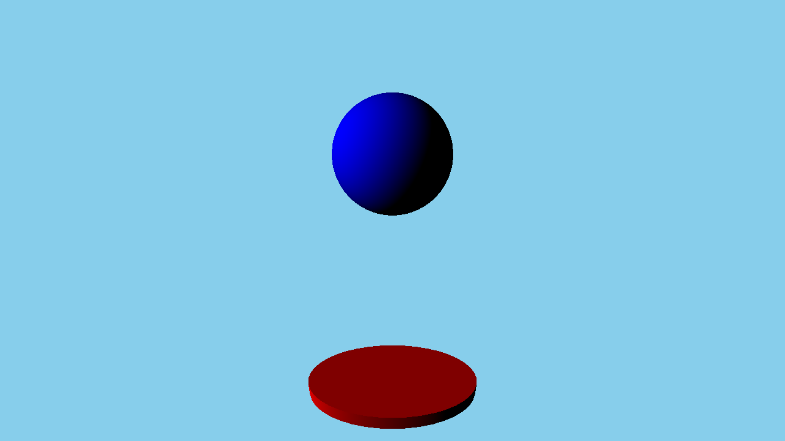

Qt Quick 3D - Simple Example
Demonstrates how to render a simple scene in Qt Quick 3D.

Simple demonstrates how to render a scene in Qt Quick 3D.
Setting Up the Scene
We set up the entire scene in the main.qml file.
To be able to use the types in the QtQuick3D module, we must import it:
import QtQuick3D 1.15
First of all, we define the environment of our simple scene. We just clear the background color with 'skyblue' in this example.
environment: SceneEnvironment { clearColor: "skyblue" backgroundMode: SceneEnvironment.Color }
And then, we define a camera which represents the viewport of the rendered scene. In this example, we use PerspectiveCamera which shows perspective viewport in a general 3D scene. Because we want to define some objects around origin, we move this camera to the rear position and rotate slightly.
PerspectiveCamera { position: Qt.vector3d(0, 200, 300) eulerRotation.x: -30 }
For the objects in the scene to be rendered correctly we need to add a light source, in this example we'll be using a DirectionalLight
DirectionalLight { eulerRotation.x: -30 eulerRotation.y: -70 }
Draw Simple Objects
Now, we draw some built-in objects. In this example, we draw a red cylinder and a blue sphere using Model. However, just drawing objects is too simple, so we make a round plate with the red cylinder and add bouncing animation for the sphere.
Model { position: Qt.vector3d(0, -200, 0) source: "#Cylinder" scale: Qt.vector3d(2, 0.2, 1) materials: [ DefaultMaterial { diffuseColor: "red" } ] } Model { position: Qt.vector3d(0, 150, 0) source: "#Sphere" materials: [ DefaultMaterial { diffuseColor: "blue" } ] SequentialAnimation on y { loops: Animation.Infinite NumberAnimation { duration: 3000 to: -150 from: 150 easing.type:Easing.InQuad } NumberAnimation { duration: 3000 to: 150 from: -150 easing.type:Easing.OutQuad } } }
Files: